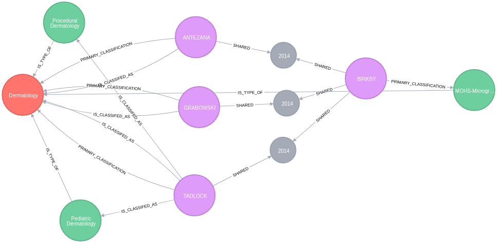

By Brett Taylor | May 1, 2018
Data are one of the most import resources in Healthcare to enable the Triple Aim. If you not familiar with the triple aim, it is focused on:
- Better Health
- Better Care
- Lower Cost
Better health means that your organization and you are working on finding ways to create a better experience for the healthcare population that you support. Better care requires that you are delivering care at the highest level. Lower cost is required to create a better patient experience and to ensure that you can deliver care at the best level. Healthcare Information Technology will help to drive forward the application of data analytics to enable the triple aim. Making good solutions in this area requires that we understand the connections between our data. The Neo4j graph platform will help you enable this.

###Neo4j Database for Referrals I adopted the native graph database, NEO4J while I was doing research on a regional group of specialists. The idea was that with the provider specialty we needed to understand the referral patterns between the practitioners. I initially started the research by creating a database that had all of the providers, practice geographic locations, procedures, referrals, and shared patient information. While I was analyzing the data, I found that I could not show the patterns of referrals based on the data because the relational database could not look at patterns across multiple provider relationships. In other words, I’d execute a query, and the database would run forever and then fail. This is when I adopted the Neo4j Graph database.
The graph database could rapidly determine the patterns of referrals. I also used unsupervised machine learning to categorize the providers to ensure that we were looking at them based on what they performed and not just based on their specialty code. Below is an R Markdown file I created that displays how dermatologists refer to dermatologists which I analyzed based on 2014 CMS open data.
This shows a problem you need to be able to analyze. This analysis work takes advantage of the connections between providers.
If you want to look at a specific provider and see their referrals, you can run a Cypher query like below.
MATCH pth= (pc1:Provider_Taxonomy)<--(mohs_surgeon:Provider)-[ps1:SHARED]->(sp:Shared_Patient)<-[ps2:SHARED]-(referring:Provider)-[ica:IS_CLASSIFED_AS]->(pc2:Provider_Taxonomy) where mohs_surgeon.provider_last_name_legal_name = "BIRKBY" and mohs_surgeon.provider_first_name = "CRAIG" return pth
When performing a referral analysis you, of course, have a hypothesis of how referrals can be determined, and then you will test the hypothesis. This particular visualization is not the final research and will not be 100% accurate. I’m displaying this just to demonstrate how pattern recognition can be performed using this new state of the art native graph database. Patterns are something we need to understand better in healthcare.
###Utilization of Graph Databases in Healthcare There are many other areas where pattern identification matters including:
- Care Delivery
- Software Application Utilization and Integration
- Fraud Detection
- Common Data Model - Concept and Observations (OMOP)
- Master Data Management
This is a very quick introduction to the Neo4j Graph Database and Cypher. I have used this toolset for analysis purposes and integration into applications over that 2 years. I recently became certified as a Neo4j Professional because I feel that this is one of the directions that healthcare needs to migrate to so that they can manage the future. There are some great resources out on the web for you to learn about graph databases which include:
If you are interested why this might be valuable in our industry, please reach out to me and I’ll give you a quick introduction.
Thanks,
Brett